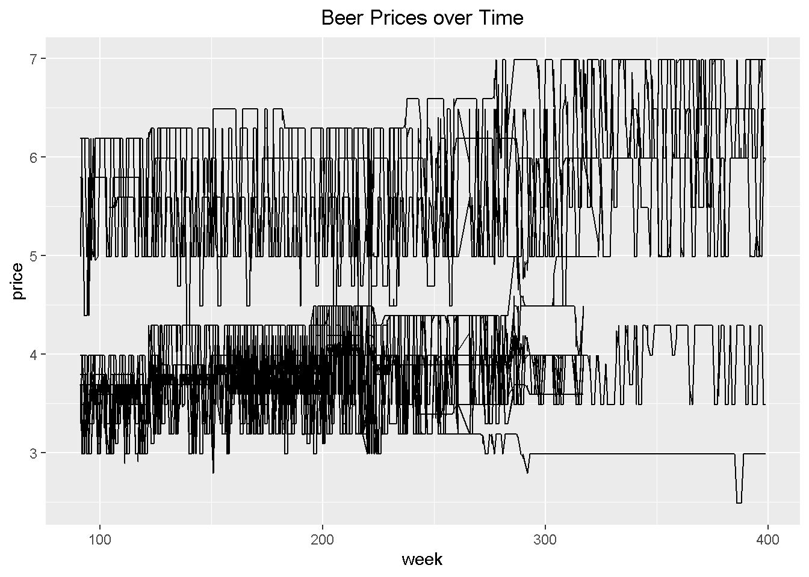
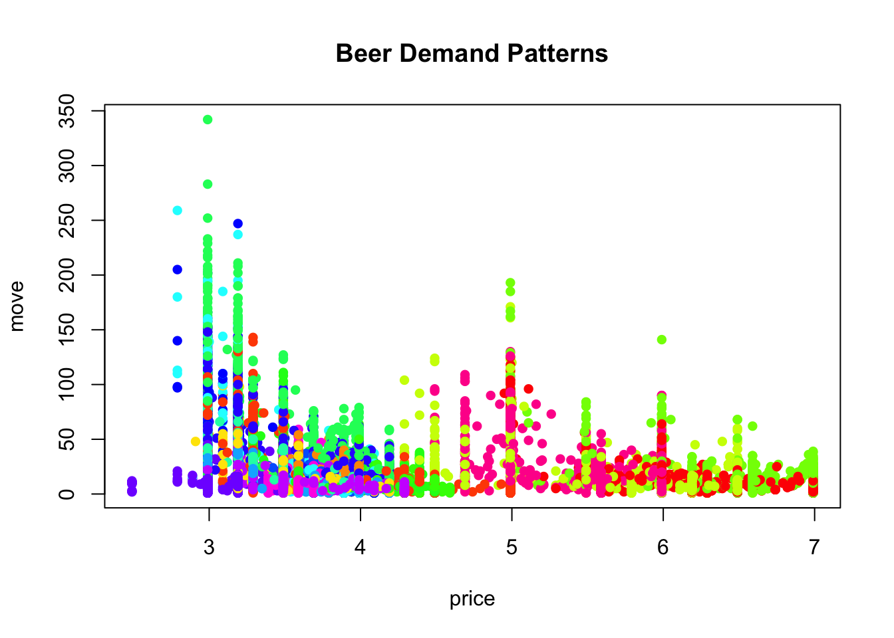
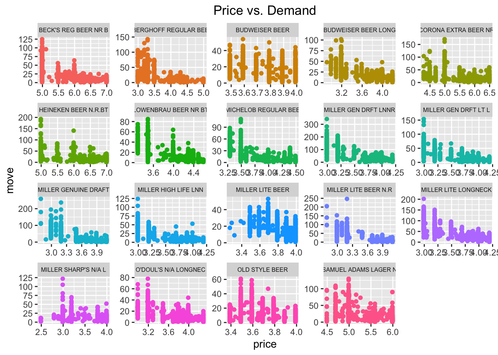
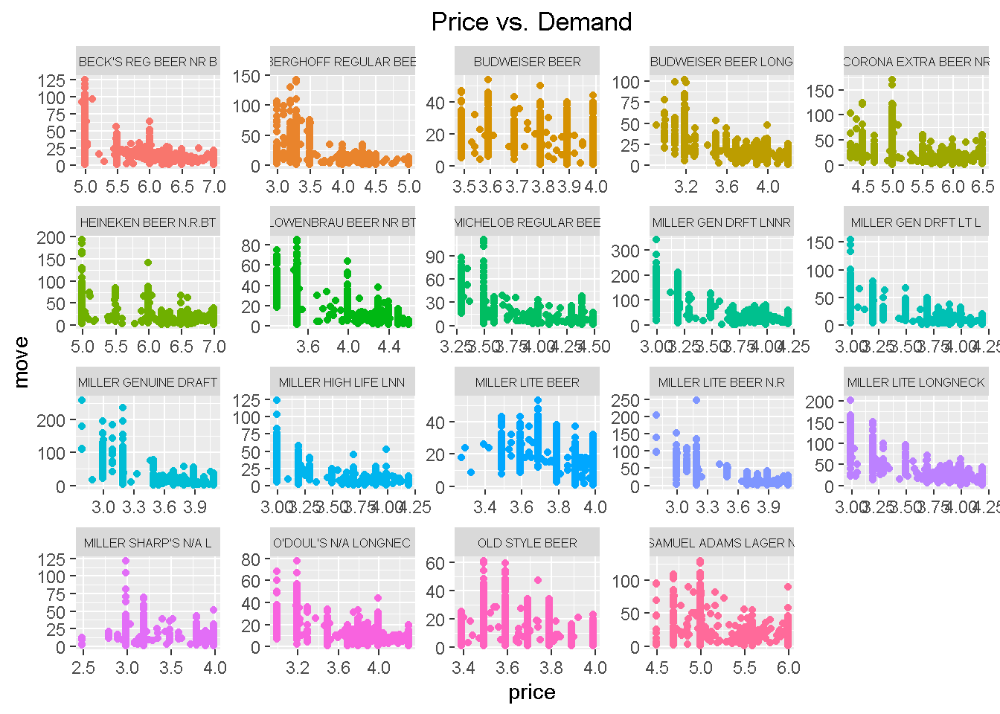

1 Introduction to Data Analytics
1.1 Loading and Inspecting Data Sets
The following line of code reads in a data set that contains weekly prices, promotional activity, and sales for 20 different brands of beer. The data set comes from many stores within one Chicago grocery retail chain – Dominick’s Finer Foods – and spans more than five years of transactions. The complete raw data are publically available from the Kilts Center for Marketing at the University of Chicago.2
Notice we used the sep option to specify the delimiter used in our data file (which is a comma , for this data file).
We always want to view the data after importing to make sure all the values were read-in correctly. To inspect the first few lines of a data set, use the head( ) command.
| store | upc | week | move | price | sale | profit | brand | packsize | itemsize | units |
|---|---|---|---|---|---|---|---|---|---|---|
| 86 | 1.82e+09 | 91 | 23 | 3.49 | 19.05 | BUDWEISER BEER | 6 | 12 | oz | |
| 86 | 1.82e+09 | 91 | 9 | 3.79 | 28.23 | O’DOUL’S N/A LONGNEC | 6 | 12 | oz | |
| 86 | 1.82e+09 | 91 | 9 | 3.69 | 22.03 | BUDWEISER BEER LONG | 6 | 12 | oz | |
| 86 | 1.82e+09 | 91 | 78 | 3.29 | B | 5.78 | MICHELOB REGULAR BEE | 6 | 12 | oz |
| 86 | 3.41e+09 | 91 | 35 | 3.69 | 22.98 | MILLER LITE BEER | 6 | 12 | oz | |
| 86 | 3.41e+09 | 91 | 12 | 3.69 | 22.98 | MILLER GENUINE DRAFT | 6 | 12 | oz |
We can see that our data set contains 11 different variables (i.e., columns). A brief summary of each variable is provided below.
store: unique store ID numberupc: Universal Product Codeweek: week ID numbermove: number of units soldprice: retail price in US dollarssale: indicator of promotional activityprofit: gross profit marginbrand: brand namepacksize: number of items in one packageitemsize: size of items in one packageunits: units of items
Finally, we need to attach the data set so that R knows where to find the variables we want to analyze (e.g., move, price).
Now we can access/view any of the variables by typing their name. For example, let’s look at the first 5 observations of the price variable.
## [1] 3.49 3.79 3.69 3.29 3.69Here the closed brackets [ ] allow us to subset the data and the numbers 1:5 tell R to return observations 1, 2, 3, 4, and 5.
1.2 Statistical Summaries
We can perform a variety of statistical summaries on our data using R’s built-in functions. A summary of commonly used statistical functions is provided below.
| Statistic | R Function |
|---|---|
| mean |
mean( )
|
| median |
median( )
|
| variance |
var( )
|
| standard deviation |
sd( )
|
| correlation |
cor( )
|
For example, we can compute the average demand (i.e., units sold) variable using the mean( ) function.
## [1] 18.81Now suppose we wanted to find the average demand only for a certain brand of beer, say Budweiser. To do this, we first need to subset move and only include observations where brand is equal to BUDWEISER BEER.
Again, using closed brackets [ ] allow us to subset the data. We are interested in the move variable, but now we only want the observations where the condition stated inside the brackets is satisfied. Note: a double equals sign == is always used when writing logical statements to check equality.
Now we can use the mean( ) function to compute the desired average demand for Budweiser.
## [1] 16.33An all-purpose way to compute averages across different factor levels is to use the aggregate( ) function. The first argument specifies the variable we want to average and associated categorical/factor variable, and the second argument specifies the function we want to execute (i.e., the mean).
| brand | move |
|---|---|
| BECK’S REG BEER NR B | 18.35 |
| BERGHOFF REGULAR BEE | 15.57 |
| BUDWEISER BEER | 16.33 |
| BUDWEISER BEER LONG | 18.24 |
| CORONA EXTRA BEER NR | 15.39 |
| HEINEKEN BEER N.R.BT | 16.74 |
| LOWENBRAU BEER NR BT | 16.89 |
| MICHELOB REGULAR BEE | 14.23 |
| MILLER GEN DRFT LNNR | 50.96 |
| MILLER GEN DRFT LT L | 20.06 |
| MILLER GENUINE DRAFT | 16.37 |
| MILLER HIGH LIFE LNN | 14.05 |
| MILLER LITE BEER | 18.09 |
| MILLER LITE BEER N.R | 18.71 |
| MILLER LITE LONGNECK | 38.39 |
| MILLER SHARP’S N/A L | 11.45 |
| O’DOUL’S N/A LONGNEC | 11.96 |
| OLD STYLE BEER | 13.38 |
| SAMUEL ADAMS LAGER N | 20.62 |
We can also compute the average of more than one continuous variable by binding together (i.e., concatenating) the columns of the variables of interest using the cbind( ) command. For example, the following code will compute the average sales volume and average price by brand.
| brand | move | price |
|---|---|---|
| BECK’S REG BEER NR B | 18.35 | 5.877 |
| BERGHOFF REGULAR BEE | 15.57 | 3.944 |
| BUDWEISER BEER | 16.33 | 3.814 |
| BUDWEISER BEER LONG | 18.24 | 3.746 |
| CORONA EXTRA BEER NR | 15.39 | 5.795 |
| HEINEKEN BEER N.R.BT | 16.74 | 6.341 |
| LOWENBRAU BEER NR BT | 16.89 | 4.051 |
| MICHELOB REGULAR BEE | 14.23 | 4.040 |
| MILLER GEN DRFT LNNR | 50.96 | 3.686 |
| MILLER GEN DRFT LT L | 20.06 | 3.689 |
| MILLER GENUINE DRAFT | 16.37 | 3.783 |
| MILLER HIGH LIFE LNN | 14.05 | 3.678 |
| MILLER LITE BEER | 18.09 | 3.820 |
| MILLER LITE BEER N.R | 18.71 | 3.744 |
| MILLER LITE LONGNECK | 38.39 | 3.689 |
| MILLER SHARP’S N/A L | 11.45 | 3.356 |
| O’DOUL’S N/A LONGNEC | 11.96 | 3.785 |
| OLD STYLE BEER | 13.38 | 3.682 |
| SAMUEL ADAMS LAGER N | 20.62 | 5.405 |
1.3 Graphical Summaries
Creating visual data summaries in R is also one of its strengths. Examples of useful graphical functions include hist( ), boxplot( ), plot( ), pie( ), barplot( ).
An example of a histogram of weekly demand is shown below.

Here the main= option allows us to customize the plot title. We can also use the breaks= option to control the bin width.

We can also use a boxplot to look at the distribution of balance. To do this, we’ll use the boxplot( ) function.

Notice how the extreme positive values (outliers) make the boxplot hard to analyze. We can remove these outliers with the outline=FALSE option.

We can also use the boxplot( ) function to see how the distribution of demand changes across brands of beer.

The first argument tells R that we want to plot move against brand. Note that the numeric variable (e.g., move) must always come before the factor variable (e.g., brand). We’ve also added labels to the x- and y-axes using the xlab and ylab options.
One issue with the plot above is that the labels on the x-axis are too wide. To solve this problem, we can rotate the x-axis labels by adding las=2 as an option in the boxplot( ) command. We will also want to slightly adjust the plot margins to allow for more space below the graph. This can be done by adding par(mar=c(a,b,c,d)) before the boxplot( ) command, where a,b,c,d denote the bottom, left, top and right margins, respectively. Lastly, we can use the cex.axis option to adjust the axis label sizes.
par(mar=c(10.1,4.1,4.1,2.1))
boxplot(move ~ brand, main="Distribution of Beer Sales Volume", outline=FALSE, xlab="", ylab="weekly units sold", las=2, cex.axis=.75)
We can create scatter plots using the plot( ) function.

The first argument corresponds to the variable on the x-axis, while the second corresponds to the variable on the y-axis.
To modify the type or color of the points in the above plot, we can add pch and col options. For example, let’s change the points to be closed circles (pch=16) that are red (col=2).

Adding color is a great way to incorporate information about other variables. For example, should the relationship between price and demand change by brand? The answer is likely yes. To see this visually, let’s change the color of each point to represent the corresponding brand. This is an example of “conditional formatting”.
palette = rainbow(20)
colors = palette[as.numeric(brand)]
plot(price, move, main="Beer Demand Patterns", pch=16, col=colors)
legend("topright", legend=levels(brand), pch=16, col=palette, cex=.5, bty="n")
The first line of code generates 20 unique colors from a rainbow palette, one for each brand. Because there are hundreds of points on our scatter plot, we need to identify assign a color to each point. This is what the second line of code does. In the third line, we simply use the colors object we just created to specify point colors.
The last line of code adds a legend to the plot so that we know what the colors correspond to. The first argument indicates the legend position, the second argument legend indicates the values to be shown on the legend, the third argument pch is the point type, the fourth argument col is the color for each value, and the fifth argument cex adjusts the text size.